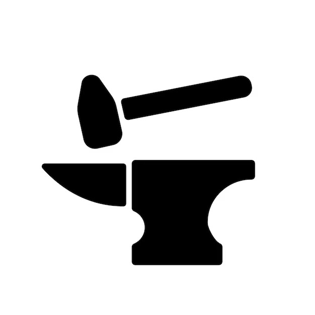

Nathan Skoczkowski
👋 Welcome to my website!
You can find information about my projects, skills, and work experience!
Job Experience
Teledyne Flir
Hardware Engineering Co-op
September, 2024 - December, 2024
Key Technologies: Altium, AutoCAD, LTSpice
- Joined a subsection of Teledyne, Teledyne FLIR as a part of the electrical engineering team which works on commercial drones
- Worked on next generation camera payload which attaches externally to the drone and allows for 24/7 vision through light detection and ranging (lidar), long-wave infrared or (lwir) imaging and the capability to have vision 24/7 while certain modules are limited to nighttime vision or daytime vision
- Designed boards specifically for the camera payload for detecting proper signal and power connections to the drone with a hall sensor as well as a zig zag design to prevent a short circuit
- Collaborated with the mechanical team for designing payload enclosures for prototyped payloads with AutoCAD

CIBC
System Engineering Co-op
January, 2024 - May, 2024
Key Technologies: Python, pandas, Excel
- Joined a section of CIBC known as the mezzanine lending group specifically for technology based companies
- Was a part of a subdivision, the Portfolio Management team to monitor fund movements for companies that have recieved loans
- Worked on optimizing daily record keeping from a manual multi (2-3) hour process to an automated one that just requires brief user oversight
Full Circle TMS
Software Engineering Co-op
May, 2023 - September, 2023
Key Technologies: HTML, CSS, JavaScript, TypeScript, Angular, AngularJS, Kendo
- Optimized codebase performance by transitioning key components from AngularJS to Angular 2, enhancing overall system efficiency
- Impacted and optimized 200+ key components by enhancing site reliability leading to improved user experience and reduced load times
- Achieved a 20% performance boost and significantly enhanced user experience by leveraging JavaScript, TypeScript, HTML/CSS, Kendo, Angular, and AngularJS to optimize and refine frontend components, ensuring smoother interactions
- Maintained code integrity across 500+ files and streamlined workflow by ensuring consistent Git commits and adherence to best practices
Full Circle TMS
Software Engineering Co-op
June, 2021 - September, 20221
- Worked on a client-facing application on the software quality engineering team and participated in daily scrums with senior engineers
- Improved frontend UI to present information to the customer base by remedying bugs from prior commits
- Resolved 10+ bugs in front-end UI application to improve information presentation and reliability
- Made committs to the main website practicing Git for push/pull requests, BitBucket for version control and Jira for task management
Key Technologies: HTML, CSS, JavaScript, TypeScript, Angular, AngularJS
Projects

Formax-Fit
Key Technologies: HTML, CSS, JavaScript, Firebase
- Developing a fitness based app that connects with my werable fitness tracker
- Utilizing llms to help with users to develop a workout plan
- Includes easy data import/export with .csv/.txt files
Wearable Fitness Tracker
Key Technologies: Altium, 3-D Printing, Soldering
- Prototyping a wearable fitness device based on the idea behind the original fitbit
- A device that is more small and not meant to replace a phone instead just to have all the features that a tracker would require
- Incorporating heartrate sensor, imu, gps, oximeter in order to measure for day to day exercise tracking and sleep indicators
- Worked from breadboard to properly prototype overcharge circuits, and connections to the MCU
Automated Reservoir System
Key Technologies: Proteus Tools, Breadboarding, STM32, Hand Soldering and Reflow, UART
- Prototyping a STM32-driven system that alllows water out of a reservoir
- Introduced a multi-tiered moisture detection algorithm using C++, enabling precise water release based on time and user set conditions
- Designed an intuitive LED display, offering users real-time visualization of water remaining in reservoir

cmdexec
Key Technologies: Python, Sandboxie, Docker
- Formulated and implemented a robust Python application that empowers users to initiate and manage multiple programs via intuitive command-line inputs
- Employed the Tkinter library to craft a user-friendly GUI tailored to the application's core functionalities. This strategic design choice enhanced accessibility, ensured intuitive and seamless user input, and significantly reduced learning curves for new users
- Pioneered Docker containerization, achieving a 99.9% secure execution rate for over 1,000 user-specified programs
Moisture Zone
Key Technologies: Breadboard, STM32, C
- Prototyping a STM32-driven system that intelligently irrigates soil by detecting and responding to moisture levels, promoting sustainable farming
- Introduced a multi-tiered moisture detection algorithm using C++, enabling precise water release based on soil conditions
- Designed an intuitive LED display, offering users real-time visualization of soil moisture metrics and irrigation status
- Created functioning demos using TinkerCad, drafted the Moisture Zone by hand and made a system architecture drawing